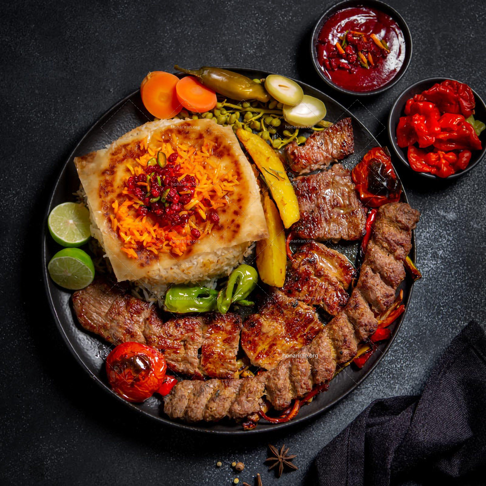
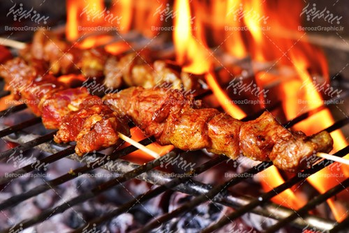

طرز تهیه کباب رشتی

انواع کباب مواد مورد نیاز نحوه پخت
تاریخچه کباب
معروفترین انواع کباب های ایران می توان به کباب گلپایگان،دنده کباب کرمانشاهی
،کباب بداب ،کباب چنجه ،کباب ترش،کباب کوبیده ،کباب برگ، کباب سلطانی ، کباب دوش ، جوجه کباب ، جوجه کباب دو رنگ ، کباب چوبی، کباب ترخونی ،کباب حسینی ،جوجه کباب بوقلمون ، کباب شیشلیگ ، کباب بختیاری و... را نام برد. استفاده می شود.
انواع کباب
کباب ترش .
کباب کوبیده .
کباب چنجه .
مواد مورد نیاز
ادویه .
گرم گوشت گوساله.
پیاز 2عدد.
نمک و فلفل.
رب انار تازه.
جدول زمانی
| جمعه
|
پنج شنبه
|
چهارشنبه
|
سه شنبه
|
دوشنبه
|
یکشنبه
|
شنبه
|
|
تعطیل
|
جوجه کباب
|
کباب مرغ ترش
|
کباب کوبیده
|
کباب ترش
|
کباب ترش
|
کباب چنجه
|
نحوه پخت
ابتدا گوشت را با پیاز مخلوط میکنیم.
رب انار را به گوشت اضافه میکنیم.
اجازه میدهیم گوشت استراحت کند .
نمک و فلفل را اضافه میکنیم .
! گوشت شما اماده پخت است.
